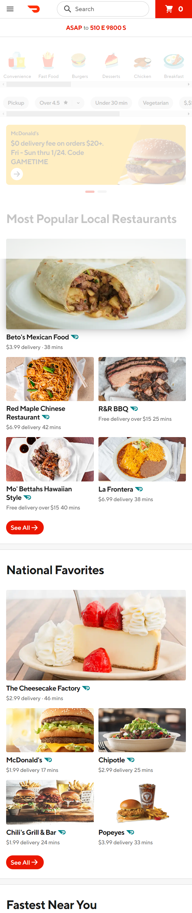

Fitt's Law
Cyprus Credit Union
The Cyprus Credit Union website shows a fantastic example of Fitt's Law. All of the important buttons are large and easy to click on a smartphone. They are also brightly colored to stand out from other elements of the design.
White Space and Clean Design
BYU Pathways
The BYU Pathways website shows a really good example of the white space and clean design principle. There is a lot of white space between each element so that it is easy to focus on the more important parts of the website. White space does a lot to reduce the clutter on a page and make the design look very crisp and clean.
PARC: Proximity
Doordash
The Doordash website demonstrates the principle of proximity very well. Each section is grouped with several restaurants within that category. It makes it very clear when one category ends and the next category begins.